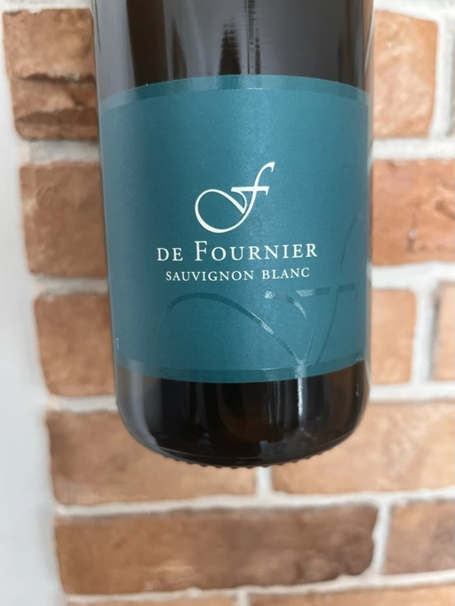

- Type
- White Still, Dry
- Producer
- Domaine Fournier Père et Fils
- Vintage
- 2020
- Location
- France, Vin de Table
- Grapes
- Sauvignon Blanc
- Alcohol
- 12.0
- Sugar
- NA
- Price
- 595 UAH
- Cellar
- N/A
Ratings
2022-09-21 - 7.00
A Sauvignon Blanc from Vallée de la Loire. Light yellow colour. Expressive and not complicated nose: green apricot, citrus, peaches and tropical fruits. Fresh, round, with a rather short and bitter finish. Not bad.